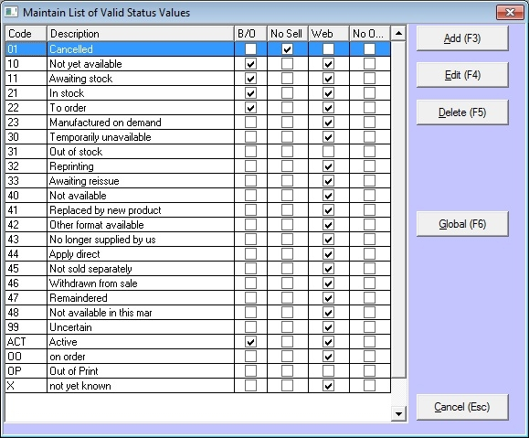
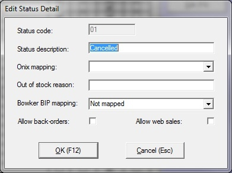

The Status section of Bookscan allows for you to maintain the different Status you may want to use within the system. (E.g. Active). The status' are a field used within the Title Master that can be set for each title to indicate the status of that title.
To maintain Status' on the main menu click on Tables,then point to Authority Tables and then click on Status.

ONIX Status'
To load the ONIX standard Status codes, press F12, this will populate them.
If you already have your own custom status codes, simply use the Global functionality as described below to merge your old codes into the ONIX ones.
Status Fields
Code - 3 characters code to uniqely identify the status
Description - the description of the status
B/O - Stock that is allowed to be back ordered. (wholesale)
No Sell - Stock that cannot be sold (e.g. Harry Potter, prior to release date, may have a status of 'Awaiting Date', to stop it being sold accidently). This will not allow the item to be sold anywhere in the program.
Web - Stock thats not to be exported when using the Web Export module
No ONIX - Stock that's not to be exported when creating ONIX files using the ONIX export.
Manage Status Codes
Add
To add a new Status, click on the Add button.
Enter the following:
Code (3 characters)
Name
ONIX code (select from drop down list) optional. This allows you to map the ONIX code, to your own codes. This is helpful when importing titles from title page etc.
Allow backorders (check box to select) - a tick means to allow.
No Sell (check box to select) - a tick means to exclude from sell able stock
Allow web sales (check box to select) - a tick means to exclude
Click the OK button.
Edit
To edit an existing Status, click on the Status and click the Edit button
You can make changes to:
Name
ONIX code (select from drop down list) optional
Allow backorders (check box to select) - a tick means to allow.
No Sell (check box to select) - a tick means to exclude from sell able stock
Allow web sales (check box to select) - a tick means to exclude

Click the OK button.
You can edit 'No Sell', 'No ONIX', 'B/O', and 'Web' can be edited from the list view by double-clicking on the tick boxes themselves.
Global
To globally change one status codes links into another. Doing this will run through and anywhere that the old code is stored, it will replace it with the new code.
Click the Status and click Global.
Absorb Status code : The one you are changing
Absorb Into Code: The code you are changing to.
Click the OK button.
Delete
To delete an existing Status, click on the Status and click the Delete button.
Then click the Yes button.
Close
To exit the Status section, click this button.